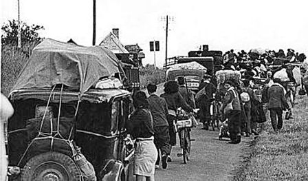
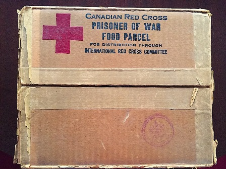
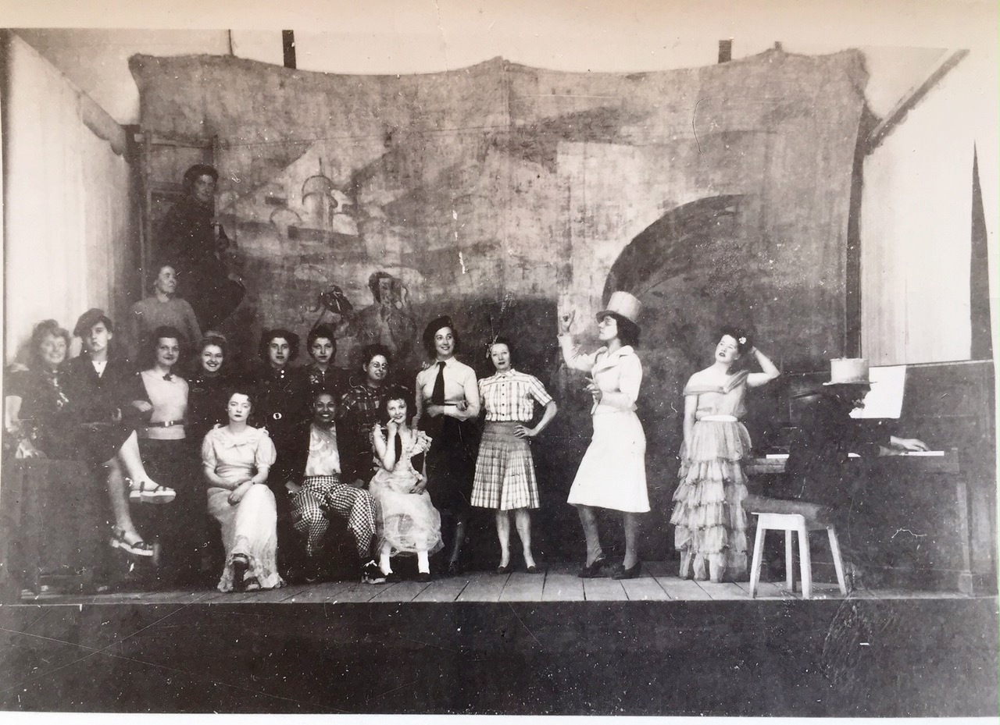
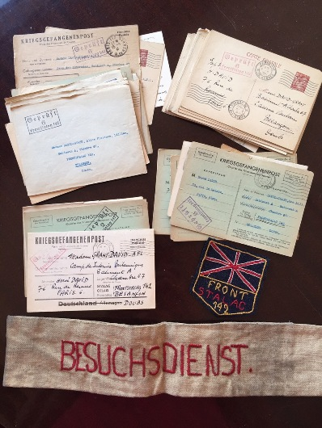
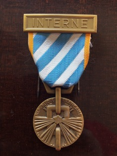

Paris Branch
Members' stories
My mother started to lose her hearing at the age of 17 - and yet did not allow that to prevent her from taking up for a while a career on stage as a mezzo soprano soloist and theatrical artist. Brought up in King's road, Chelsea, she was part of the fashion world there, a fact which certainly helped her later to fit in to the Paris scene of the time. Apart from putting paid to her stage career, her deafness had a second consequence: unsure of being able to understand everything in conversation her strategy was to monopolise it and I, as a child could overhear long monologues not always meant for my ears. Her experiences during the 39/45 war were unusual and it seems to me of some historical interest. Hence my decision to put what I can recall of them down on paper. It is another aspect of what life was like at the time. Born Lillian Grant, this is my mother's story:
In 1929 Lillian had a sense of adventure: British women were officially discouraged from going to outposts of empire unless they were married or had a job waiting for them. She, however was a personable girl of 24, had already been a singer and an actress - and this in spite of some hearing difficulties. It was the Age of Empire and, with government encouragement or not she was smitten with the urge to go and see it. The family doctor was Indian, a good enough reason to start there. She decided to work her way to the subcontinent in stages. Thus it was that she arrived in Paris in 1929 in search of a job to finance her next step eastwards. She was offered a job as an English shorthand typist at a travel agency on the Champs Elysées. It was there that the ship of her oriental ambitions foundered definitively: She found a man with "a lovable nature" (as she recounted in her diary) - her future husband, Hervé David - and never got to India.
In any event, life in Paris was already wonderful in "les années folles ". Just travelling to work in a horsedrawn carriage from the Luxembourg Garden to the Champs-Elysées was exciting. And she was part of all the artistic life from Montparnasse to the Opera via the Coupole and the Théâtre des Champs-Elysées. There she met Fujita, Mistinguett, Josephine Baker, Paul Robson, Chaliapine. It was a heady place for life at a heady pace. And she had met someone to love and they were together. The question of marriage at that time seemed irrelevant to Lillian and Hervé. For ten years they didn't bother.
Lillian's responsibilities at work became greater, a few years after the financial crash of 1929 Americans were returning to the Continent and she was a guide and organiser for trips to Cologne, Algiers, Sfax, Oberammergau... Then she and Hervé opened beauty parlours in both Paris and London which meant traveling frequently between the two cities. She was still frequently crossing the Channel in 1939, at the outbreak of the war, and as late as 1940. In what was now wartime. The length of the sea-trip was uncertain now and could extend to 48 hours. Ships could cross only if the sea was calm, the sky clear and, in the best of all possible cases, with a full moon to help the lookout spot that ghastly hazard, the floating sea-mine.
In early June 1940, the German army had invaded the north of France and was on its way to Paris. On the 9th, Hervé's brother-in-law, who was working as an architect in Soissons, called Hervé to let him know that the Germans were about to leave Soissons, en route for Paris. Lillian was at the American church attending a concert at the time and Hervé phoned the church and managed to contact her. She passed on the news to the Minister who announced to the congregation that "from good authority I learn that the Germans are about to enter Paris." and he added, "And now, of course I shall be leaving - but after you." In the event it seems he arrived in the south of France before my parents got there. (His caution was understandable for, after fighting in WWI, he had married a Frenchwoman and had three children to care for).
Clearly the best thing
to do was to join the exodus to the South of France. Indeed the next day,
Monday, first thing in the morning, Hervé's American boss asked him to
buy two Cadillacs which he managed to do. He was desperate not to leave
Lillian behind. The fact that they were not yet married made her position
under an impending German occupation doubtful, even dangerous so he asked
his boss if Lillian could travel down with them, "Not enough room!" grumbled
the manager but finally agreed that she could come on the strict condition
that she take only one small suitcase. Within an hour she had packed and
winkled her way into the crowded car - along with Whisky, their newly
acquired dog. They joined the millions of people already on the road,
the less fortunate on foot, others in every means of transport known to
man. Lillian traveled several days most uncomfortably with a coat stand
poking in her back: the boss seemed to have decided to load the entire
office contents into the cars. Early into the journey the brakes on the
car Hervé was driving failed. Stopping the car was now accomplished by
the simple process of running into the car in front. This was , curiously,
a minor problem as cars were bumper-to-bumper on the roads anyway and
speeds rarely exceeded walking pace. 
At this rate it must have taken several days to reach Hendaye. They rarely left the car for most people along the route refused to put up the refugees for fear of being robbed - and not, it would appear, without reason. Hervé was still driving on the approach to the Spanish frontier when he spotted a military convoy that was about to cross into Spain. The French army was without leadership and in complete disarray but some units made their way to North Africa and this may have been one of them. Hervé immediately turned the car to follow the convoy for it would be easier to cross on its tail and he soon found himself on the international bridge of the Bidassoa. He himself, however, had no wish to leave France. Spotting a young boy by the roadside, he asked him to fetch the American boss to take over the driving across the Spanish border. This he did and the company fleet of Cadillacs disappeared into the distance leaving the couple by the roadside, stranded in Hendaye with no home and no means of support.
Searching for a hotel, who should they meet but the Minister of the American Church in Paris again. He was looking for one of his erstwhile parishioners to take his family over to Spain and, in fact, succeeded. He eventually managed to get back to the States and came back to Paris after the war to resume his ministry there. Faithful to his vocation, he took the opportunity of this accidental meeting to sermon Hervé on the subject of his long-delayed marriage to Lillian. It was, he said, about time he did something about it. Hervé and Lillian talked over this novel idea as they searched for a hotel. Marriage did indeed seem to present some advantages it had not had before, notably consolidating Lillian's right to French citizenship. The next day, on the 24th June, Hervé, having finally taken the minister's admonition to heart, went to see the mayor of Hendaye to see about getting married. There was a problem: on a account of his fiancée's foreign nationality, the mayor, he said, would have to request an authorization from the Procureur in Bayonne. That, apparently, would take a fortnight. "But" said Hervé, "circumstances are exceptional. Surely...". He managed somehow to convince the mayor there was no time to wait. The Armistice had been signed on the 22nd and the demarcation line separating occupied and "unnocupied" France was being installed as the Germans marched rapidly southwards. They would be in Hendaye very soon. The mayor mused for a while and finally said "Well, if it's urgent, it's urgent: Tonight 6 o'clock. In the mairie" So it was, that that same evening, after office hours, at 6 o'clock - with no witness except for their dog Whisky - they got married. There was no wedding-ring and Lillian wore a black dress for that was all she had. The ceremony over, they left behind them three puddles on the floor. Two large ones and one smaller one from Whisky. It had been raining heavily , a typical Basque rainstorm, and they had all been drenched on their way there. On the "livret de famille" , a document handed over to every couple upon their civil marriage in France, it was mentioned that Lillian had applied for French nationality. Unfortunately, this turned out not to have its hoped-for effect.
A few days later the Germans arrived in Hendaye. Soldiers were billeted in hotels and in private houses. Soon after their arrival, notices appeared on the streets informing the population that all landlords with British tenants had to declare them to the Kommandantur and a few weeks later a second notice informed all British citizens that they had to report to the Kommandantur every morning. Undoubtedly with some apprehension, Lillian duly went, was received by the Standortkommandant and to her amazement found that she was already well known to them. Their file on her was remarkably complete : British, married to a Frenchman, a nurse, German-speaking, living in a hotel, a dog owner etc. The officer assured her that she had no need to report: as far as he was concerned she was French. Unfortunately, it turned out that this interpretation was not the same all over the occupied zone.
The couple stayed in Hendaye for six months in the Hotel Lilliac which had been, for the most part, requisitioned by the German military. It was during that time that Hitler met Pétain in Montoire and secretly extended his visit to meet Franco at Hendaye train station. In fact it was something of an an open secret for all foreigners in the Basse Pyrennées (as it was then) had been rounded up and held for the occasion. Lillian, remarkably, was not held and went as far as to ask the Kommandant if she could be allowed to watch the historic meeting. He replied that even he himself could not attend.
Hervé returned to Paris and started a new job at the French Red Cross. Lillian, however had grown to like the Basque country and decided to stay on for a while working as a nurse. Whisky, in the meantime, a playful and friendly dog , was popular with the other residents of the hotel, German officers who stopped to stroke him. Lillian afterwards maintained that it was only the smell of German shoe-polish which he liked. However the officers often took the opportunity to speak to his mistress who, they were delighted to discover, spoke German. In those early months of the occupation in France, the concept of 'collaboration' had not yet appeared, the atmosphere was relatively relaxed and, in any event, most Germans in Hendaye were on leave, at the seaside, and on their best behaviour. Indeed the local population, who had feared the brutallity many remembered from WWI were favourably impressed, or at least relieved. Many German officers passed through and Lillian met Werner von Braun there when he was on leave - this was, of course, long before von Braun became a household word. In the course of her frequent conversations with German soldiers of various ranks she was ironically amused at their pride in their best guns which, she was astounded to discover, were made in Britain. Business, apparently, doesn't stop for war.
Unfortunately, the good relations which she had established with the soldiers had been noticed. She had come to the attention of the Gestapo. One evening a German civilian approached her and asked her, quite bluntly, to spy on the German soldiers. Horrified, she argued that the soldiers would not disclose any secrets to her, knowing that, if they did they would risk serious trouble. In fact, if she had passed on information to the Gestapo, and if it had become known, her situation in the hotel would become unbearable. On the other hand, refusing to cooperate with the Gestapo would be construed as the attitude of an enemy. They would probably have her arrested as a British subject. Somewhere inside she felt that spying for the British might be one thing; spying for the Germans: unthinkable. For the moment she prevaricated and hoped that the problem would go away.
It wouldn't, of course, she was caught between the devil and the deep blue sea. The very next evening the German civilian returned to exert more pressure and an appointment was made in Bayonne with a higher-ranking official for the following Saturday. In a hopeless attempt to escape an impossible situation, the following day Lillian took the train for Paris. Not, perhaps, the best of ideas: the Gestapo, as might be expected, took a dim view of this: Three days after her arrival in Paris, early in the morning of December 5th 1940, she was arrested by the French police.
She was questioned
twice at the Commissariat and unfortunately had to show as proof of identity,
her British passport for she had not yet received her French identity
card. Then she was escorted to the Gare de l'Est and put on a train for
Francfort-on-Main where, to her surprise, she found herself surrounded
by hundreds of other British women. Before the train reached the frontier
it suddenly changed route. Apparently the British Prime Minister, Winston
Churchill, had been informed of the impending deportation of 6000 British
women from France - they were all part of this same convoy - and somehow
he managed to convince the German authorities to keep them on French soil.
Since the Germans considered the occupied zone of France as German territory
anyway they agreed and so the train was diverted. It eventually drew into
Besançon station, the women disembarked and walked up a hill to the "Citadelle
Vauban", a notorious garrison known for its deplorable sanitary conditions
and a reputation as a breeding ground for dysentery. The Germans in Besançon
were not prepared for the sudden apparition of 6,000 women in their Front-Stalag
n° 142. They hastily dug long parallel trenches covered with planks in
the large courtyard to serve as latrines. Lillian later carried a vivid
memory of these and used to say she did not mind looking at the bottoms
of the women in front of her, but hated having hers observed from behind.
Entering the camp building for the first time she was met with the odd
sight of dozens of women, all scrubbing pots and pans with sand. " Poor
women ", she thought, " they have already gone mad ". Soon she joined
them however: the rule was that each internee had to find her own pan,
recuperated from the ancient garrison kitchen. The only means of cleaning
this newly-acquired utensil was a pile of sand outside. Hence the curious
scene which had met her eyes on arrival. She also had to find a bed -
many had been recuperated by the Germans from neighbouring garrisons to
meet the needs of this sudden influx but they were all dumped together
outside and it was left to the women to fetch and install them. Most beds
were wooden but fortunately, Lillian got a steel one. Getting a metal
bed was something of a luxury: there are fewer places for bedbugs to hide
in a metal bed and consequently one is less bitten than in a wooden bed.
Insects were, however, everywhere and even drinking your coffee, you had
to keep an eye on it for it was not unknown for one to fall into a cup
from the ceiling. Depending on the size, each dormitory housed between
twenty and forty women. Bunk beds, one above the other, lined the walls
and in the middle was a long table with benches on either side. At one
end of the room there was a coal-burning stove. To keep this alight, the
internees had to fetch fuel from the snowy courtyard. Lillian's kilt was
worn threadbare from carrying sacks of coal and it had to be mended and
re-mended continually. It was a severe winter even for Besançon which,
backed up against the Jura mountains as it is, is a cold city in the best
of winters. Hence sewing and cutting trousers out of garrison grey cotton
blankets became a general hobby. In one of her letters to her husband
she mentions the food: We have, she said, " boiled potatoes with a wee
piece of boiled meat every day" 
 
At the end of April 1941, it was suddenly decided that the internees would be transferred to the spa town of Vittel and concentrated among the opulent hotels of the thermal resort which had been surrounded by a double fence of barbed wire for the occasion. For some reason it was necessary that a substantial backlog of letters be censored before their departure. That meant that the Germans gaolers had a sudden burden of work: there were about ten thousand letters to be scanned by the German censor. Lillian (and a few other women) had been requisitioned to open all the envelopes and pass them on to the officer checking the letters which were handed over to the internees after their arrival in Vittel.
As soon as they arrived in Vittel in the new "Internierten-Lager" of "Front-Stalag n° 194", everyone started to make trousers again, this time not out of cotton blankets but from the splendid flowery curtains which bedecked the hotel rooms. Even carpets were not safe from amateur couturiers. It was found that they could be transformed into rather elegant hand bags.
Ever since Lillian had arrived in the Frontstalag of Besançon , her husband had been in constant contact with the Procureur de Bayonne, the Hendaye Kommandantur, the Chambre des Députés, the Ministère de la Justice, the Kommandantur von Gross-Paris - wherever he thought he might be heard, explaining that his wife was French and shouldn't be interned. Each time, he would be told that, of course his wife should not have been arrested, and that the official naturalisation papers were on their way. In the end something seemed to have worked for, on 8 March 1941, Lillian finally received her French identity card which, witnessed by a Lageroffizer, she immediately signed and sent back to her husband. This document Hervé now had to present to the Kommandantur whose office was 2 place de l'Opéra. To enter the Kommandantur you had to have a pass, an " ausweis ", and he didn't have one. All he had was a pass for the Chambre des Députés. He arrived at the office, took a deep breath and strode through the entrance at breakneck speed aiming directly for the main staircase. Guards ran after him demanding that he stop and show his pass. Gesturing violently he said he had no time to look for it; he was late for an urgent appointment. When the soldiers insisted he finally agreed, patted distractedly at his pockets and eventually displayed, emerging from a coat pocket just a corner of his Chambre des Députés pass showing the blue, white and red stripes found on all such cards. Immediately the soldiers took their hands off him and fortunately looked no further. On the first floor, an officer listened to his case, examined the new ID card and left the office. He came back with a heap of papers which must have been at least a foot thick. It contained every detail of Lillian's daily activities in Hendaye. Hervé was astounded at the completeness of the file. And still the officer held out no hope for the liberation of his wife. Indeed the possibility seemed to have receded for the British Government had just declared that under no circumstances could British nationals lose their nationality.
In the event however Lillian spent little time at Vittel. As from her arrival in Besançon she had pleaded her case with the Oberlagerkommandant, the second in command and this man, an Austrian aristocrat and a well-known artist in his own country, was sympathetic to her cause. She had concocted a valid reason to justify her liberation based on the fact that she should be nursing her husband who was a serious invalid. The grounds for this were that Hervé, when a child in 1915, had been run over by a tramway and lost a leg. Thus it was that shortly after the relocation to Vittel, Lillian was called to the LagerKommandantur and - miracle - handed her her long delayed "beschneinigung " - her liberation papers. In fact they had come through some three weeks before in Besançon but, as was (and is) often the way, bureaucracy had held things up. She was, it is indicated on the document, the 1943rd internee to be released.
The very next day, 6 May 1941, she took the train for Paris where she joined Hervé in the appartment building where he was living - the highest building in central Paris at the time had the minor inconvenience of being occupied by a garrison of 40 soldiers. Further, because of the height two anti-aircraft batteries had been installed on the roof. This attracted the attention of allied planes and one night in particular they were horrified to see a British plane heading directly for their window. In one of those ambiguous situations peculiar to warfare and fortunately or unfortunately, depending on one's point of view the Germans opened fire first and the attacking plane, hit, skimmed by the building and came down near the Chambre des Députés. For Lillian, despite the occupation of the building by German soldiers and the occasional inconvenience of the aforementioned kind, the rest of the war passed in relative calm and she was little the worse for her experiences except for intestinal trouble, which she had contracted in the camp and which dogged her for the rest of her life.
Post Scriptum:
This, then, was my mother's story. To complete the picture I would like to add that the other Vittel Internees remained captive until the end of the war and were freed on 13 September 1944 by la 2ème Division Blindée of General Leclerc who visited the camp and later described the astonishing sight of thousands of women in luxurious hotels yet behind barbed wire, cheering their liberators. The Austrian officer from Besançon, mentioned in the story, was in Paris towards the end of the war. He had Lillian and Hervé's address and called to ask about my mother. They learned it had been he who had, in fact, been responsible for getting her out of captivity. Hervé told the officer that his wife was in a clinic having just given birth (to myself) and he offered to take him to the clinic on his car-cycle (which he had constructed from two bicycles). On the way, crossing Paris from St Germain-des-Près to Neuilly, they had a puncture and the officer had to watch the disabled Hervé change the tyre. In his position it would have been most inappropriate to help. Within days of this street fighting for the Liberation of Paris broke out. Somehow he managed to leave the city and made his way back to his native Austria. On his arrival he found that his daughter had just been buried in the remains of the local school which had been bombarded by the Allies and her fate was as yet unknown. Fortunately she was eventually discovered alive. Ten years later my mother, my father and myself visited him and his family in his manor in Gratz. One evening, my mother asked him how he had managed to get her liberated. He explained that it was thanks to a misunderstanding - perhaps a carefully fostered misunderstanding - on the part of the old German Hauptmann Kommandant of the camp who was under the impression that her husband Hervé had been wounded as a soldier in WWI and therefore, in an action of " wartime comradeship ", had signed my mother's liberation papers.
